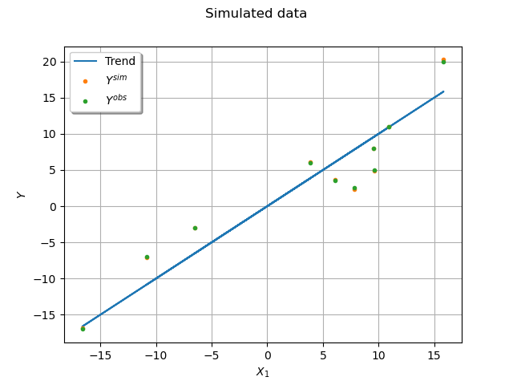
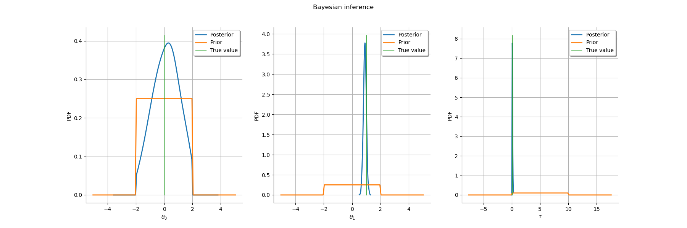
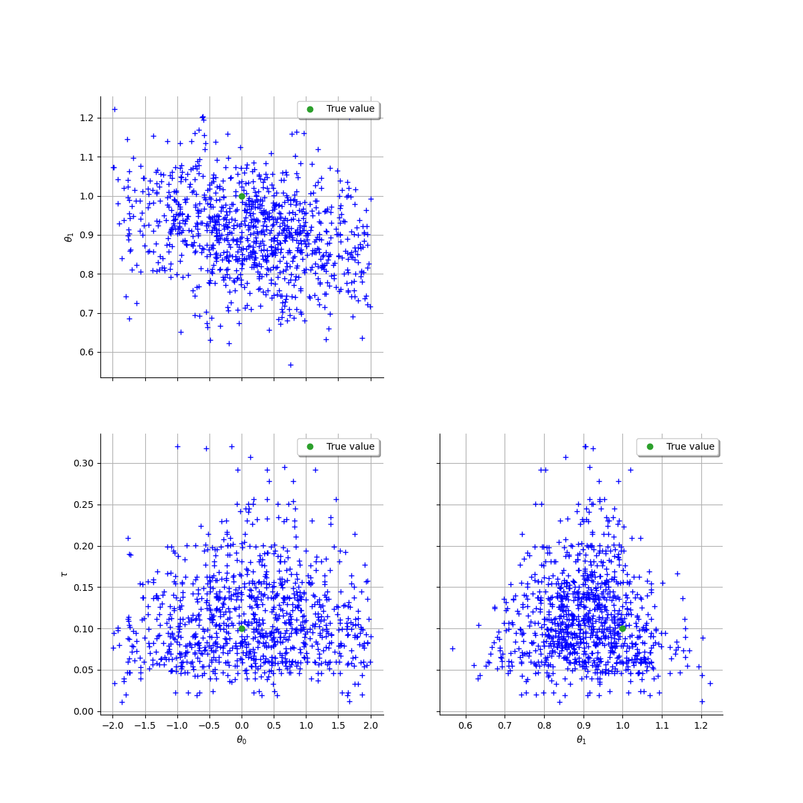

Note
Click here to download the full example code
Linear Regression with interval-censored observations¶
1. Model formulation¶
We consider the following linear model:
where the observation vector is modeled as the sum of:
a linear part, with an design matrix and unknown regression coefficients ,
a Gaussian error term ,
where represents a known precision (inverse variance) matrix for measurement errors, and an unknown precision parameter quantifying the variability of the observed phenomenon.
1.1. Likelihood of the linear regression model¶
The above linear regression model can thus be written:
We then have the following likelihood:
where is the Mahalanobis distance between
 and with covariance matrice
and with covariance matrice  :
:
1.2. Interval Censorship¶
We now assume that, instead of observing directly the as described above, we only have access to discretized values , where is a grid length and means that .
1.3. Remarks¶
The presence of a composite matrix makes estimation more complex than with a spherical one since we would then have explicit (closed-form) maximum likelihood estimators, and also conjugate priors leading to explicit full joint posterior distributions.
Another difficulty is the presence of censored data, since the likelihood is no more available in closed-form. As we will see, this can be overcome thanks to Bayesian inference.
Heteroscedastic linear modeling under interval censorship as formulated above was originally motivated by an industrial case-study in seismology, wherein the correspond to the observed intensity of an earthquake in a distant site, and explanatory variables are derived from the epicentral distance to the earthquake’s source as well as its characteristics (magnitude, depth). But it can also arise in many different contexts, as soon as observations are available with known statistical precisions (hence the heteroscedasticity) and limited numerical accuracy (hence the censorship).
1.4 Simulate the dataset¶
import openturns as ot
from openturns.viewer import View
import numpy as np
ot.Log.Show(ot.Log.NONE)
ot.RandomGenerator.SetSeed(1)
n = 10
delta = 0.5
Build the design matrix
X = ot.Sample([[1.0]] * n)
X.stack(ot.Normal(0.0, 10.0).getSample(n))
Make the precision matrix a diagonal matrix and sample
its diagonal coefficients from an Exponential distribution.
Q = np.ones((n, 1)) + ot.Exponential().getSample(n)
Choose values for the parameters  and .
and .
theta_true = np.array([[0.0], [1.0]])
p = len(theta_true)
tau_true = 0.1
First sample uncensored, and then censored observation data.
mean_true = np.dot(X, theta_true).ravel()
std_true = np.sqrt(1.0 / tau_true + 1.0 / Q).ravel()
Y_sim = mean_true + [x[0] for x in ot.Normal().getSample(n)] * std_true
Yobs_sim = np.round(Y_sim / delta) * delta
Plot the simulated dataset.
graph = ot.Graph("Simulated data", "$X_1$", "$Y$", True, "topleft", 16)
cloud_obs = ot.Cloud(X[:, 1].asPoint(), Yobs_sim)
cloud_obs.setPointStyle("bullet")
cloud_sim = ot.Cloud(X[:, 1].asPoint(), Y_sim)
cloud_sim.setPointStyle("bullet")
curve = ot.Curve(X[:, 1].asPoint(), mean_true)
curve.setLineWidth(1.5)
graph.add(curve)
graph.add(cloud_sim)
graph.add(cloud_obs)
graph.setLegends(["Trend", "$Y^{sim}$", "$Y^{obs}$"])
graph.setColors(ot.Drawable.BuildDefaultPalette(3))
_ = View(graph)

2. Bayesian Inference¶
2.1. Choice of a prior law¶
We use the standard Normal-Gamma prior for and
:
where all parameters are assumed a priori independent if not stated otherwise.
Furthermore, a default choice for the hyperparameters consists in having all prior variances go to infinity, equivalent to the degenerate case:
But the resulting prior is improper. Hence, posterior propriety needs to be proven first.
A simpler solution is to ensure prior (hence posterior) propriety by imposing bounds on all parameters following:
where inequalites are taken componentwise. When all hyperparameters go to as described above, the prior converges to a product of uniform distributions.
We will use this product of univariate uniforms as a prior in the following. As discussed above, there is no simple way to obtain the posterior distribution, justifying the use of Monte-Carlo Markov chain techniques, as described hereafter.
lower = (Yobs_sim.ravel() - delta).tolist()
upper = (Yobs_sim.ravel() + delta).tolist()
# Global support of the joint distribution: theta, tau, outputs
support = ot.Interval([-2.0] * p + [1e-4] + lower, [2.0] * p + [1e1] + upper)
prior = ot.ComposedDistribution(
[ot.Uniform(-2.0, 2.0), ot.Uniform(-2.0, 2.0), ot.Uniform(1e-4, 1e1)]
)
# Initialize to true value
initial_state = theta_true[:, 0].tolist() + [tau_true] + Y_sim.ravel().tolist()
initial_state = ot.Point(initial_state)
2.2. Posterior sampling¶
The solution we advocate consists in sampling from the joint posterior distribution of all uncertain parameters, including the vector of continuous intensities seen here as a latent variable. Indeed, adding to the vector of sampled variables yields a posterior density which is available in closed form, up to an unkown multiplicative factor
![\begin{array}{ll}
\pi(\vect{Y},\vect{\theta},\tau|\vect{Y}^{obs})
& \propto \pi(\vect{\theta},\tau)\times\mathcal L(\vect{Y}|\vect{\theta},\tau)\mathcal L(\vect{Y}^{obs}|\vect{Y})\\
& \propto
{\bf 1}_{\{\vect{\theta}_{\min} \leq \vect{\theta} \leq \vect{\theta}_{\max}\}}\times
{\bf 1}_{\{\tau_{\min} \leq \tau \leq \tau_{\max}\}}\times
\mathcal N_n (\vect{Y}|\mat{X} \vect{\theta};\tau^{-1} \mat{I}_n + \mat{Q}^{-1}) \times
{\bf 1}_{\left[\vect{Y}^{obs}-\frac{\delta}{2}; \vect{Y}^{obs}+\frac{\delta}{2}\right[}(\vect{Y}).
\end{array}](../../_images/math/6de340b8f082cdbdd23af58ffe3019ba6d8d8edb.svg)
This allows to perform the following Metropolis within Gibbs sampling scheme, wherein the pre-defined blocks of variables are updated in turn, according to their conditional posterior density, or to a Markov kernel targeting it, as described in the following.
2.2.1. Updating ¶
, hence the latent variables are updated by simply simulating independent univariate truncated normals.
Step 1 : Create associated RandomVector
marginals_trunc = [
ot.TruncatedNormal(Yobs_sim[i], 1.0, lower[i], upper[i]) for i in range(len(X))
]
trunc_cond_Y = ot.ComposedDistribution(marginals_trunc)
RV_Y = ot.RandomVector(trunc_cond_Y)
Step 2 : Link function, giving the parameters of the univariate truncated normals in function of the chain’s current state
gen_params = np.array(trunc_cond_Y.getParameter())
def py_link_function_y(x):
"""
link function for Y conditional density
Input
x: vector with length (p + 1 + n), containing the current state of (theta, tau, Y)
Output
params: vector with length 4*n, corresponding to mean, std, a and b, for each component of Y
Notes
a and b represent the upper and lower bounds for the truncated normals
"""
theta = [x[i] for i in range(p)]
tau = x[p]
# compute conditional mean and standard deviates
mean = np.dot(X, theta)
std = np.sqrt(1.0 / tau + 1.0 / Q)
# inject values in blueprint
params = gen_params.copy()
params[::4] = mean
params[1::4] = std.ravel()
return params
2.2.2. Updating ¶
Due to the partial conjugacy of the conditional prior this is explicit, and given by the following box-constrained multivariate normal:
with
or equivalently, thanks to the matrix Woodsbury identity:
By having all hyperparameters go to we obtain the following simplified form:
Explicit simulation from a box-constrained multivariate normal can be done with a simple rejection sampling scheme:
Step 1 : Create associated RandomVector
class BoxConstrainedNormal(ot.PythonRandomVector):
"""
Multivariate normal distribution
under box constraints
"""
def __init__(
self, d=2, mu=np.zeros(2), Sigma=np.eye(2), r=np.zeros(2), s=np.ones(2)
):
for x in mu, Sigma, r, s:
if len(x) != d:
print("expectation or bound does not have size %s" % d)
raise ValueError
if Sigma.shape != (d, d):
print("covariance matrix not have dimensions (%s,%s)" % (d, d))
raise ValueError
super(BoxConstrainedNormal, self).__init__(d)
self.mu = mu
self.Sigma = Sigma
self.r = r
self.s = s
self.interval = ot.Interval(r, s)
def setParameter(self, parameter):
d = self.getDimension()
self.mu = np.array(parameter[:d])
self.Sigma = np.array(parameter[d: d + d * d]).reshape(d, d)
self.r = np.array(parameter[-2 * d: -d])
self.s = np.array(parameter[-d:])
self.interval = ot.Interval(self.r, self.s)
def getParameter(self):
return np.concatenate(
[self.mu.ravel(), self.Sigma.ravel(), self.r.ravel(), self.s.ravel()]
)
def getRealization(self):
accept = False
proposaldist = ot.Normal(self.mu, ot.CovarianceMatrix(self.Sigma))
while not accept:
proposal = proposaldist.getRealization()
accept = self.interval.contains(proposal)
return proposal
RV_theta = ot.RandomVector(BoxConstrainedNormal())
Step 2 : Link function, giving the parameters of the box-constrained normal in function of and values
def py_link_function_theta(x):
tau = x[p]
Y = [x[i] for i in range(p + 1, len(x))]
# conditional mean and variance
# for diagonal Q
Itilde_inv = 1.0 / (1.0 + tau / Q)
Xtilde = Itilde_inv * X
Sigma_n = np.linalg.inv(np.dot(Xtilde.T, X)) / tau
mu_n = np.dot(Xtilde.T, Y)
mu_n = tau * np.dot(Sigma_n, mu_n)
# extract parameters in correct order (coherent with getParameter() method of RV_theta)
return np.concatenate(
[
mu_n.ravel(),
Sigma_n.ravel(),
support.getLowerBound()[:p],
support.getUpperBound()[:p],
]
)
2.2.3. Updating ¶
is proportional to:
Hence, can be updated using the Random-walk Metropolis-Hastings algorithm.
Step 1 : compute tau’s conditional posterior density, up to a multiplicative factor
def marginals_Y(theta, tau):
mu = np.dot(X, theta).ravel()
sigma = np.sqrt(1.0 / tau + 1.0 / Q).ravel()
return [ot.Normal(mu[i], sigma[i]) for i in range(len(X))]
def py_log_density(x):
theta = [x[i] for i in range(p)]
tau = x[p]
Y = [x[p + 1 + i] for i in range(len(X))]
ld = ot.ComposedDistribution(marginals_Y(theta, tau)).computeLogPDF(Y)
return [ld]
Step 2 : define the proposal distribution
proposal_tau = ot.Normal(0.0, 1e-1)
2.3. Initialization¶
To avoid all numerical problems, it is better to provide the algorithm with a starting point not too far from the posterior mode. To this end, we propose to set for simplicity, then solve the following optimization problem
Note that the unconstrained optimization over for fixed
is explicit, since:
But we have shown that the conditional posterior density of
is Gaussian. Hence the unconstrained conditional
posterior mode (and mean) is given by:
If this point does not respect the constraints, then we simply project each component unto the constrained space.
Hence the following 1D problem remains to be solved:
The optimal value of is then given by:
def mu_n(tau):
x = ot.Point(initial_state)
x[p] = tau
# trick: posterior conditional mean is computed by the link function
return py_link_function_theta(x)[:p]
# optimization criterion
def log_cond_tau_post(tau):
x = ot.Point(initial_state)
x[p] = tau
# replace theta by its conditional posterior mean
x[:p] = py_link_function_theta(x)[:p]
# compute log conditional posterior of tau
ll = py_log_density(x)[0]
return ll
1D optimization
def func(X):
return [-log_cond_tau_post(X[0])]
problem = ot.OptimizationProblem(ot.PythonFunction(1, 1, func))
problem.setBounds(ot.Interval([1e-4], [1e4]))
solver = ot.TNC(problem)
solver.setStartingPoint([1.0])
solver.run()
tauhat = solver.getResult().getOptimalPoint()[0]
print("tauhat =", tauhat)
# inject result in initialState vector
x = ot.Point(initial_state)
x[:p] = mu_n(tauhat)
x[p] = tauhat
tauhat = 0.10077295009614318
Final step : create a MetropolisHastings object for each block
initialState = x
mi_Y = [i for i in range(p + 1, p + 1 + n)]
link_function_y = ot.PythonFunction(len(x), 4 * n, py_link_function_y)
rvmh_Y = ot.RandomVectorMetropolisHastings(RV_Y, initialState, mi_Y, link_function_y)
mi_theta = [i for i in range(p)]
link_function_theta = ot.PythonFunction(len(x), p + (p + 2) * p, py_link_function_theta)
rvmh_theta = ot.RandomVectorMetropolisHastings(
RV_theta, initialState, mi_theta, link_function_theta
)
log_pdf_tau = ot.PythonFunction(len(x), 1, py_log_density)
rwmh_tau = ot.RandomWalkMetropolisHastings(
log_pdf_tau, support, initialState, proposal_tau, [p]
)
# Now, assemble the blocks to create a Gibbs algorithm:
gibbs = ot.Gibbs([rvmh_Y, rvmh_theta, rwmh_tau])
Launch Algorithm
sampleSize = 1000
# Joint posterior density sample
sample = gibbs.getSample(sampleSize)
# compute acceptance rate
tau_post = np.array(sample[:, p]).ravel()
acc_rate = (tau_post[1:] != tau_post[:-1]).mean()
print("Acceptance rate: %s" % acc_rate)
Acceptance rate: 0.47047047047047047
Plot posterior distribution marginals
# extract interest parameters
post_sample = sample.getMarginal([i for i in range(p + 1)])
post_sample.setDescription(["$\\theta_0$", "$\\theta_1$", "$\\tau$"])
posterior = ot.KernelSmoothing().build(post_sample)
posterior = ot.TruncatedDistribution(posterior, prior.getRange())
grid = ot.GridLayout(1, 3)
grid.setTitle("Bayesian inference")
xlabs = [r"$\theta_0$", r"$\theta_1$", r"$\tau$"]
p_true = [theta_true[0][0], theta_true[1][0], tau_true]
for parameter_index in range(3):
graph = posterior.getMarginal(parameter_index).drawPDF()
bbox = graph.getBoundingBox()
bound = bbox.getUpperBound()[1]
prior_pdf = prior.getMarginal(parameter_index).drawPDF()
graph.add(prior_pdf)
curve_true = ot.Curve([p_true[parameter_index]] * 2, [0.0, bound])
graph.add(curve_true)
graph.setColors(ot.Drawable.BuildDefaultPalette(3))
graph.setLegends(["Posterior", "Prior", "True value"])
graph.setXTitle(xlabs[parameter_index])
grid.setGraph(0, parameter_index, graph)
_ = View(grid)

Draw pairplots of the posterior sample.
# sphinx_gallery_thumbnail_number = 3
grid = ot.VisualTest.DrawPairs(post_sample)
graph = grid.getGraph(0, 0)
pt = ot.Cloud(theta_true.T, "#2ca02c", "circle", "True value")
graph.add(pt)
grid.setGraph(0, 0, graph)
graph = grid.getGraph(1, 0)
pt = ot.Cloud([[theta_true[0, 0], tau_true]], "#2ca02c", "circle", "True value")
graph.add(pt)
grid.setGraph(1, 0, graph)
graph = grid.getGraph(1, 1)
pt = ot.Cloud([[theta_true[1, 0], tau_true]], "#2ca02c", "circle", "True value")
graph.add(pt)
grid.setGraph(1, 1, graph)
_ = View(grid)
View.ShowAll()

Total running time of the script: ( 0 minutes 1.295 seconds)